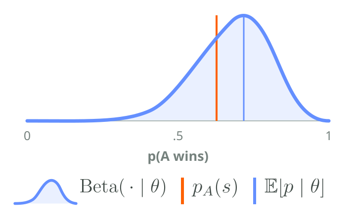
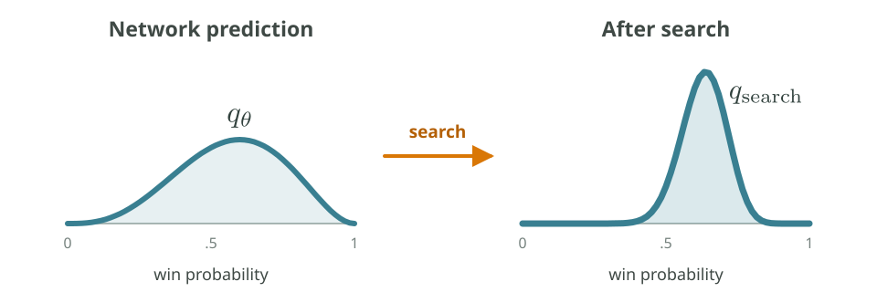
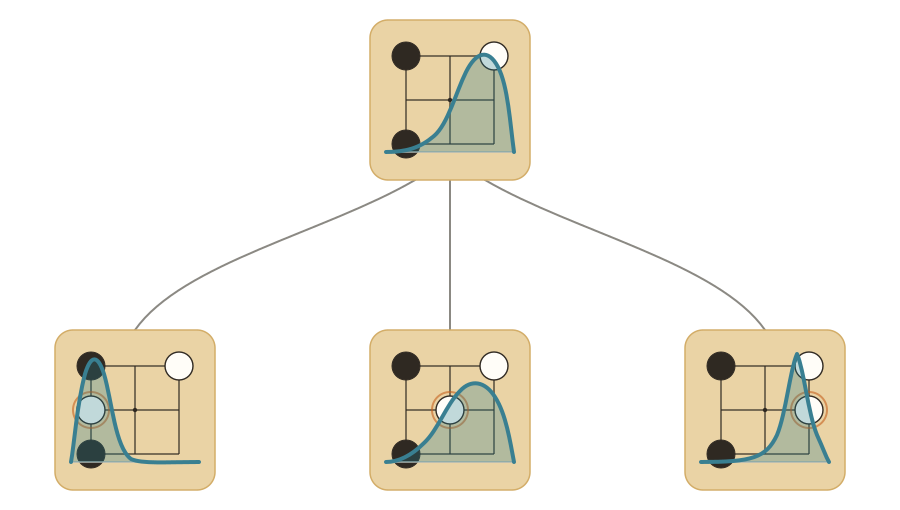
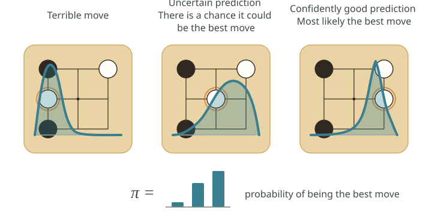
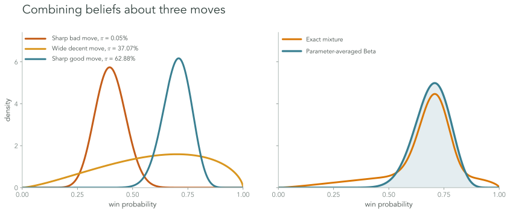
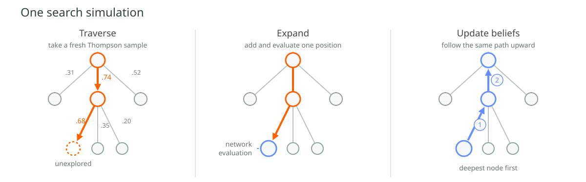
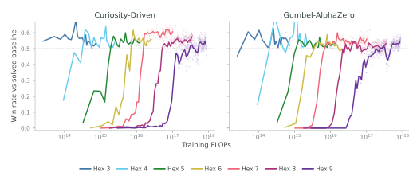
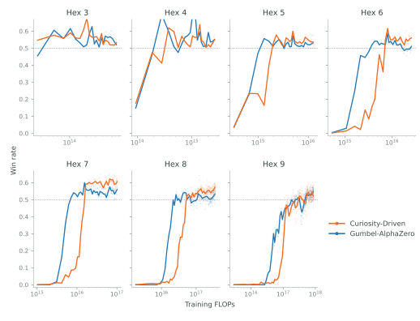
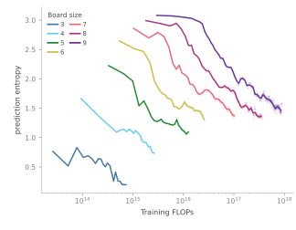

This is the second blog post of my series of "mathematical foundations of curiosity"
In the previous blog post we examined what curiosity is in the context of the $K$-armed bandits problem. Here we are going to show how you can make a search-engine
This line of search-based game-playing systems includes
AlphaGo
Suppose two players, $A$ and $B$, are given a particular board state $s$. We want to predict the probability that each player will win.
The game rules may be deterministic, but the players, are not. Each
follows a policy, $\pi_A$ and $\pi_B$.
From the current position, the eventual winner therefore behaves like the
outcome of an unfair coin.
Let $\tau=(s_0,a_0,s_1,a_1,\ldots)$ denote a complete game and let
$i_t\in\{A,B\}$ be the player who moves at time $t$. The probability
that $A$ wins from state $s$ under the two policies is
$$
p_A(s;\pi_A,\pi_B)
=\sum_{\tau\,:\,s_0=s}
\mathbf{1}\{\operatorname{winner}(\tau)=A\}
\prod_t \pi_{i_t}(a_t\mid s_t).
$$
Thus, if draws are excluded, the winner $Y$ satisfies
$p(Y\mid s,\pi_A,\pi_B)\sim\operatorname{Bernoulli}
(p_A(s;\pi_A,\pi_B))$, where $Y=1$ means that $A$ wins and
$1-p_A$ is the probability that $B$ wins.

Let's say that we want to train a NN that predicts the probability $p_A(s)$ of the player $A$ winning given a board state $s$. What would be the correct way of parametrizing the problem?
The thing we want to minimize is the Negative Log-Likelihood (NLL) of the actual real-world odds of $A$ winning. For this, we use a Beta distribution: the conjugate prior to the Bernoulli likelihood
Its two parameters have an intuitive decomposition:
$$
\underbrace{\frac{\alpha}{\alpha+\beta}}_{\text{mean: predicted odds}},
\qquad
\underbrace{\alpha+\beta}_{\text{concentration: confidence}}.
$$
This makes the Beta distribution a natural representation of uncertainty about an unknown Bernoulli probability. It has exactly the right support, and it expresses both where the win probability is believed to lie and how certain that belief is.
It is also conjugate to the Bernoulli likelihood. If
$$
p\sim\operatorname{Beta}(\alpha,\beta)
$$
before observing any new games, then after $w$ wins by $A$ and $\ell$ losses,
$$
p\mid\text{data}
\sim\operatorname{Beta}(\alpha+w,\beta+\ell).
$$
In other words, every win adds one unit of evidence to $\alpha$, and every loss adds one to $\beta$. In this model the network outputs these two positive parameters for each board state, so its prediction is a full distribution over the latent win probability rather than only a point estimate.
Suppose our dataset contains several board positions. For every position, we let the same two players play from there many times. Once we have enough games, we'll have reasonably accurate empirical estimates of $p_A$ to use as training targets for our model.
In principle, a model can learn the mapping from a board state to these outcome odds. After training, we can give it a position it has never seen and ask it to predict how games between players like $A$ and $B$ would usually end from that position.
Let's be clear: this is not how you train a chess engine. The point of this section was to show how a Beta distribution can represent both a prediction and its uncertainty.
A search engine estimates the probability of winning for each possible next move, assuming both players play optimally.
Because the optimal strategy is often unknown, the engine is uncertain about its evaluation, so its estimates must be represented as probability distributions.

In a search engine, the network provides an initial distribution $q_\theta$ as a starting guess; search improves it, and the improved prediction $q_\textrm{search}$ becomes the network's training target.
$$ L = D_{\mathrm{KL}}\!\left(q_{\mathrm{search}} \;\middle\|\; q_\theta\right). $$
To me, this really feels like how search should work: it should produce a more precise evaluation of the position!
Furthermore, the loss should be the amount of information gained from the search process, as a matter of fact the unit of measurement should be bits!
But how does search work precisely?

Let's suppose we only have a root node with an initial guess about its value distribution $V$ and some children with value distributions $Q_a$. We want to know is:
What is the probability that a given action $a$ is the best action $a^\star$?
This can be written mathematically as follows:
$$ \mathbb P(a^\star=a) = \mathbb P\left(q_a \geq q_b\;\;\forall b\neq a\right), \quad q_a\sim Q_a. $$
This is the same question we asked in the first post when studying the
$K$-armed bandit problem
We can compute the probability that "child $a$ is the best" directly from their densities like so:
$$ \mathbb P(a^\star=a) = \int_0^1 f_a(x) \prod_{b\neq a} F_b(x)\,dx, $$
where $f_a$ is the density of $Q_a$ and $F_b$ is the cumulative
distribution function of $Q_b$. This integral is surprisingly GPU-friendly as well!
Pick a shared grid of $G$ points, $x_1,\ldots,x_G$, and then:
1. Evaluate $f_a(x_g)$ for every action $a$ and grid
point $x_g$ at once. This gives one big $A\times G$ table whose entries
can be computed in parallel.
2. Turn each row into its CDF $F_a(x_g)$ with a prefix
sum—a running numerical integral. GPUs implement these scans
efficiently for all actions in parallel.
3. At each grid point we need
$\prod_{b\neq a}F_b(x_g)$ for every action. Recomputing that whole
product separately for each action would be wasteful. Instead, add the
log-CDFs once and subtract the current action's term:
$$
S_g=\sum_b\log F_b(x_g),
\qquad
\prod_{b\neq a}F_b(x_g)
=\exp\!\left(S_g-\log F_a(x_g)\right).
$$
In practice, zero CDF values are handled separately so that we never
literally compute $\log 0$.
4. Finally, multiply by $f_a(x_g)$ and sum over the
grid for every action at the same time. The whole calculation takes
$O(AG)$ work instead of the naive $O(A^2G)$.
Empirically you also found we can get a quite good approximation of
this integral using a shared grid of just $G=21$ points, and it's much faster than monte carlo!
However, if we just want to do one sample from this distribution we don't even need to evaluate this integral explicitly, we can just do a Thompson-sample: sample one possible value from every child and choose the biggest one.
$$ \tilde q_a\sim Q_a \quad\text{for each }a, \qquad a_{\mathrm{TS}}=\arg\max_a\tilde q_a. $$As a result, we can sample a policy equal to the probability that each action is optimal under our current beliefs:
$$ \pi(a) =\mathbb P(a^\star=a). $$This policy is natively curious. A child does not need to have the highest expected value to be worth exploring: it only needs enough uncertainty for there to be a meaningful chance that it is actually the best move

Unlike PUCT, which handles uncertainty indirectly through visit counts, our model predicts its uncertainty explicitly. This allows exploration to be guided by what the model does not yet know, rather than only by how often a move has been examined.
Exploring a child is useful only if what we learn there can change what we believe about its parent. Now we are going to see how we can use the information of the child to update our beliefs about the parent.
The previous section gave us
$$ \pi(a)=\mathbb P(a\text{ is the best move}). $$We reuse those probabilities to combine the current beliefs about the moves:
$$ \bar Q=\sum_a \pi(a)Q_a. $$Thus, a move that is very likely to be best has a large influence on the position’s value. An uncertain move can still matter when there is a meaningful chance that it is best.

We do not immediately throw away the network’s original prediction. Instead, we blend it with the information obtained from search:
$$ C = (1-\gamma)V + \gamma\bar Q, \qquad \gamma=\frac{n}{\kappa+n}. $$
Here $n$ measures how much search support has accumulated below the
position, while $\kappa$ controls how strongly we initially trust the
network.
The update here is only pseudo-Bayesian. Search backups are
not literally independent Bernoulli observations, so $n$ is best
understood as an effective amount of search evidence. We borrow the
weighting rule and its prior-strength interpretation without claiming
that the result is an exact Bayesian posterior.
Now we have everything needed to build a search tree. Thompson sampling tells us where to look, while the update rule tells us how to propagate the information we find back to the rest of the tree. Search builds the tree by repeatedly combining these two operations.
$$ \text{sample downward} \longrightarrow \text{expand one position} \longrightarrow \text{update beliefs upward}. $$
The whole procedure can be summarized in the algorithm to the side right here.
Typically, predictions become sharper as the search moves deeper into the tree because positions farther along in the game are, on average, easier to evaluate.
Empirically, this appears as an increasingly concentrated distribution over moves and a corresponding decline in policy entropy.
With only wins and losses, the outcome is Bernoulli: once we know $p_{\mathrm W}$, the other probability is fixed by $p_{\mathrm L}=1-p_{\mathrm W}$. A Beta distribution is therefore enough to describe our uncertainty about the single free probability.
A draw adds a third possible outcome, so we use its multi-outcome generalization: the Dirichlet distribution.
The Dirichlet distribution has virtually all the same properties as the Beta distribution, so all the math we talked so far remains basically the same.
I decided to compare this Curiosity-Driven search algorithm against
Gumbel-AlphaZero
For the experiments I was inspired by the paper "Scaling Scaling Laws
with Board Games"
And it's scalable and competitive with Gumbel-AlphaZero!

Gumbel-AlphaZero tends to converge faster, while Curiosity-Driven seems to reach slightly better final performance (althought it's pretty negligible).


Another interesting graph is the entropy of the predictions as the search goes on.
I used a JAX-native stack made of pgx
Self-play/training batch sizes were 4,096/1,024; the network was a
128-channel ResNet
I want to thank Omehad Pooladzandi for giving me access to compute, and I also want to thank (in no particular order) Ted Wong, Nicolò Monti, Diego Martì Monso, Matteo Peluso and Evan Walters for the precious feedback and support.